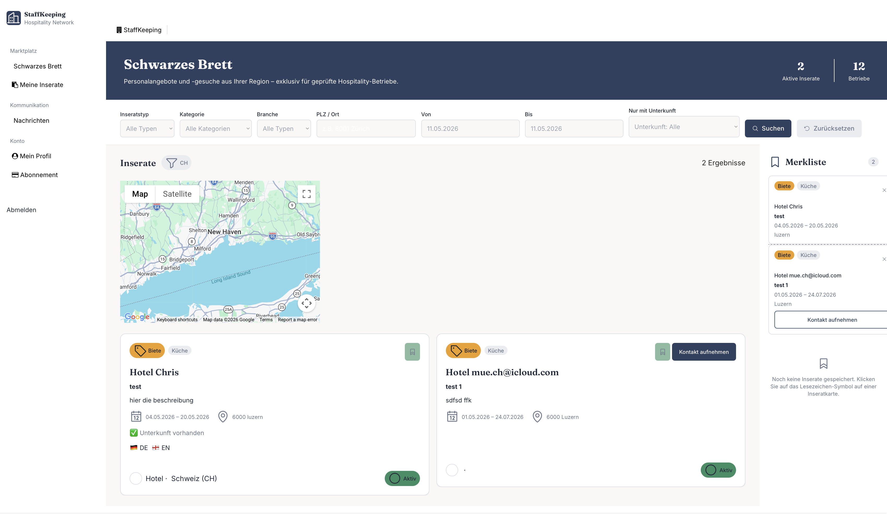
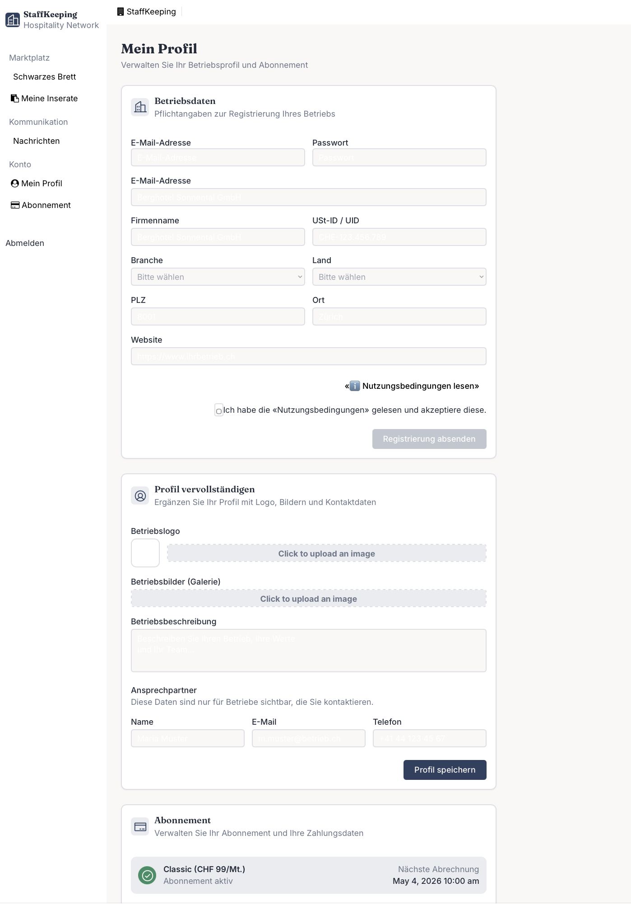
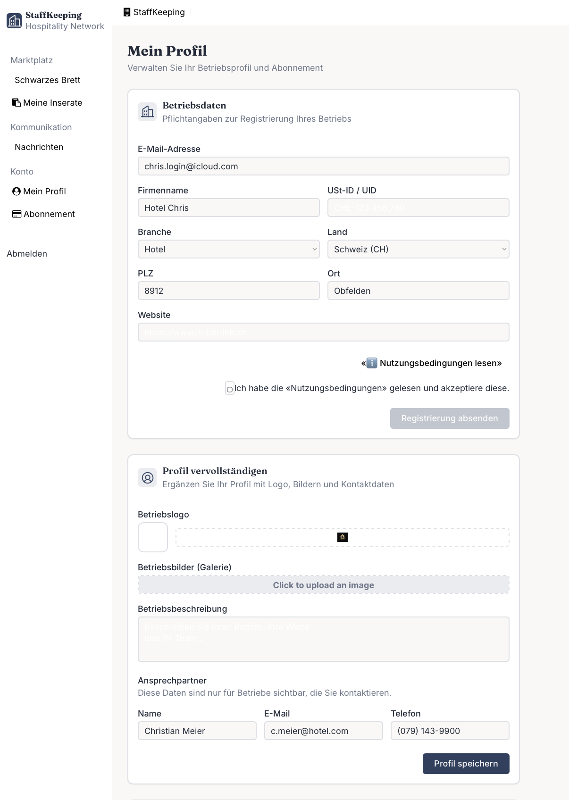
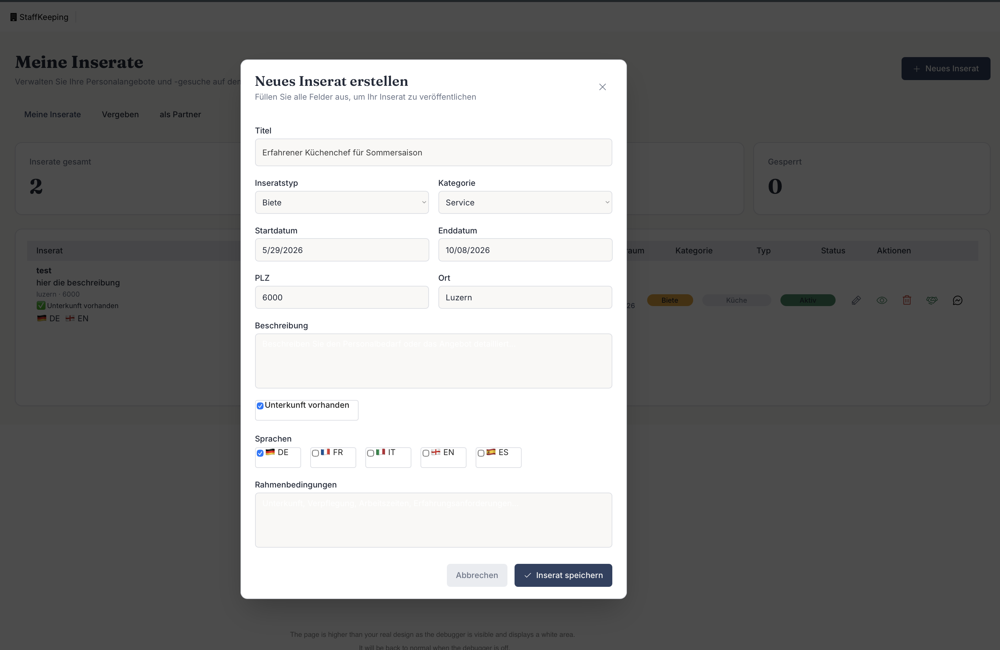
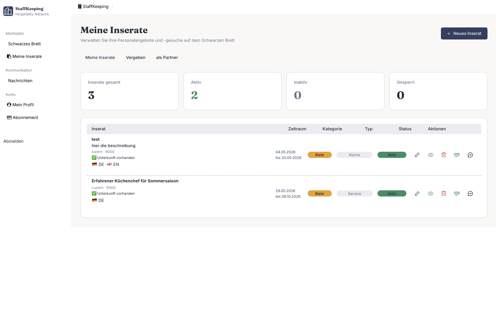
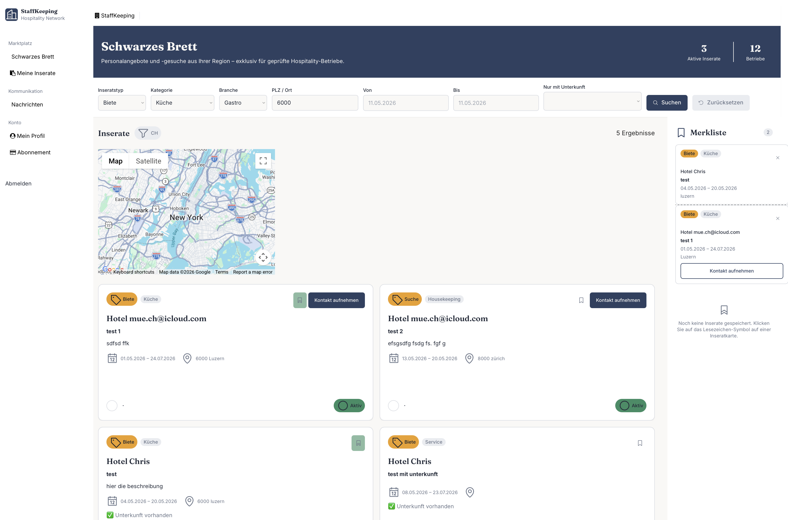
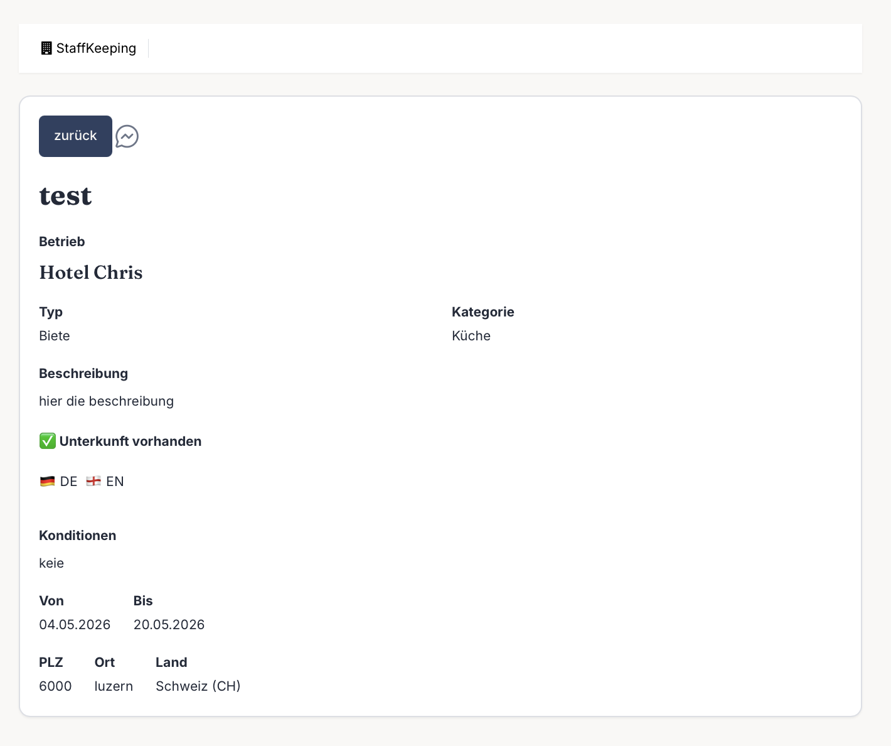
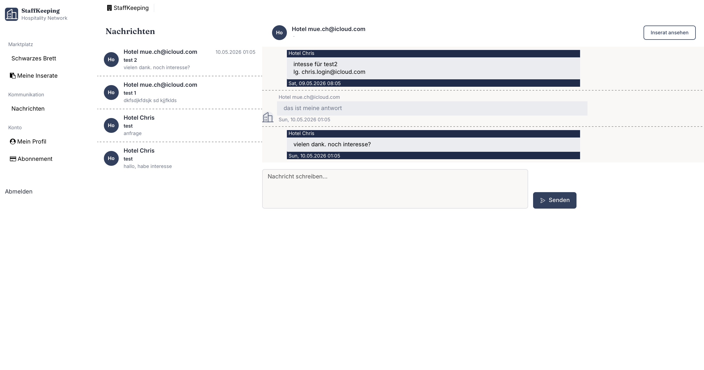

Was ist StaffKeeping?
Ein kurzer Überblick über die Plattform und wie sie Ihrem Betrieb nutzt.
StaffKeeping ist ein digitaler Marktplatz für Betriebe in der Hospitality-Branche (Hotel, Gastro, Camping) im DACH-Raum. Die Plattform ermöglicht es, temporären Personalüberhang anzubieten oder kurzfristigen Personalbedarf zu melden — auf B2B-Basis und ohne Gewinnabsicht durch die Vermittlung.
StaffKeeping steht ausschliesslich verifizierten Hospitality-Betrieben offen. Privatpersonen können sich nicht registrieren.
So funktioniert's
Konto erstellen und auf die Freischaltung durch das StaffKeeping-Team warten.
Betriebsvorstellung, Ansprechpartner und Logo hinterlegen.
Personal anbieten («Biete») oder suchen («Suche»), Zeitraum und Kategorie angeben.
Passendes Inserat gefunden? Direkt im internen Messaging-System melden.
Inserat als vergeben markieren und nach Abschluss gegenseitig bewerten.
StaffKeeping ist eine Vermittlungsplattform. Die rechtliche Abwicklung (Verträge, Versicherung, Löhne) liegt in der Eigenverantwortung der beteiligten Betriebe. Wir empfehlen, vor jeder Zusammenarbeit einen schriftlichen Vertrag abzuschliessen.

Screenshot: Startseite / Marktplatz
Registrierung
So legen Sie Ihr Betriebskonto an.
Bei der Erstregistrierung wird eine einmalige Aufnahmegebühr von CHF 199.– fällig. Danach wählen Sie ein Monatsabonnement.
Schritt für Schritt
Den Registrierungs-Button oben rechts oder im Header anklicken.
Firmenname, USt-ID / UID, E-Mail, Passwort, Branche (Hotel / Gastro / Camping), Land und PLZ.
Den Disclaimer lesen und die Checkbox aktivieren, bevor das Formular abgesendet werden kann.
Das StaffKeeping-Team prüft Ihre Gewerbeberechtigung und schaltet Ihr Konto frei. Sie erhalten eine E-Mail-Benachrichtigung.

Screenshot: Registrierungsformular
Profil einrichten
Stellen Sie Ihren Betrieb vor — das erhöht das Vertrauen anderer Mitglieder.
Nach der Freischaltung empfehlen wir, das Betriebsprofil vollständig auszufüllen. Betriebe mit aussagekräftigem Profil erhalten erfahrungsgemäss mehr Anfragen.
Die Profilseite hat zwei separate Bereiche mit je eigenem Speichern-Button: «Betriebsdaten speichern» für Firmenname, Adresse, Branche und Website — und «Profil speichern» für Logo, Beschreibung und Ansprechpartner.
Empfohlene Angaben
| Feld | Beschreibung |
|---|---|
| Betriebsvorstellung | Kurze Beschreibung Ihres Betriebs (Art, Grösse, Besonderheiten) |
| Ansprechpartner | Name, Telefon, E-Mail der zuständigen Person |
| Logo | Ihr Firmenlogo für eine professionelle Darstellung |
| Bilder | Fotos Ihres Betriebs (optional) |
| Website | URL Ihrer Betriebswebsite (optional) |

Screenshot: Profilseite ausgefüllt
Inserat erstellen
Personal anbieten oder suchen — so geht's.
In der linken Navigation auf «Meine Inserate» klicken.
Den blauen Button oben rechts verwenden.
Inseratstyp, Kategorie, Zeitraum, Ort und Beschreibung eingeben.
Unterkunft vorhanden, Sprachkenntnisse und Rahmenbedingungen angeben.
Das Inserat erscheint sofort auf dem Marktplatz.
Inseratstypen
| Typ | Bedeutung |
|---|---|
| Biete | Ihr Betrieb hat temporär Personal im Überhang und bietet es anderen an. |
| Suche | Ihr Betrieb sucht temporäres Personal von einem anderen Betrieb. |

Screenshot: Inserat erstellen — Formular
Inserate verwalten
Bestehende Inserate bearbeiten, aktivieren oder deaktivieren.
Unter «Meine Inserate» finden Sie eine Übersicht aller Ihrer Inserate mit Status, Zeitraum und Aktionsmöglichkeiten. Bei Inseraten mit bestehender Kommunikation wird die Anzahl Konversationen direkt neben dem Nachrichten-Symbol angezeigt.
Aktionen pro Inserat
| Aktion | Beschreibung |
|---|---|
| ✏️ Bearbeiten | Titel, Beschreibung, Zeitraum und alle anderen Felder ändern. |
| 🔄 Status | Inserat zwischen Aktiv und Inaktiv wechseln. |
| 🗑️ Löschen | Inserat dauerhaft entfernen. |
| 🤝 Vergeben | Inserat als vergeben markieren und Partner-Betrieb auswählen. |
| 💬 Nachrichten | Alle Konversationen zu diesem Inserat direkt aufrufen. |
Inseratstatus
| Status | Bedeutung |
|---|---|
| Aktiv | Sichtbar auf dem Marktplatz, erhält Anfragen. |
| Inaktiv | Vorübergehend ausgeblendet, bleibt in «Meine Inserate». |
| Vergeben | Zusammenarbeit vereinbart, vom Marktplatz entfernt. |
| Abgeschlossen | Zusammenarbeit beendet, Bewertung möglich. |
| Gesperrt | Vom Administrator gesperrt. |

Screenshot: Übersicht Meine Inserate
Suchen & Filtern
So finden Sie das passende Inserat.
Der Marktplatz («Schwarzes Brett») zeigt automatisch nur Inserate aus Ihrem Land. Zusätzlich können Sie mit Filtern gezielt suchen.
Verfügbare Filter
| Filter | Beschreibung |
|---|---|
| Inseratstyp | Biete oder Suche |
| Kategorie | Küche, Service, Housekeeping, Technik, Animation |
| Branche | Hotel, Gastro oder Camping |
| PLZ / Ort | Standort des Inserats |
| Zeitraum | Von-Bis Datum |
| Unterkunft | Nur Inserate mit Unterkunft anzeigen |
Interessante Inserate können mit dem Lesezeichen-Symbol vorgemerkt werden. Die Merkliste ist rechts auf dem Marktplatz sichtbar.

Screenshot: Marktplatz mit Filterleiste
Merkliste
Interessante Inserate für später vormerken.
Mit dem Lesezeichen-Symbol auf einer Inseratskarte können Sie Inserate auf Ihre persönliche Merkliste setzen. Die Merkliste ist rechts auf dem Marktplatz als Sidebar sichtbar.
Das Symbol befindet sich oben rechts auf jeder Inseratskarte.
Rechts auf dem Marktplatz oder über «Merkliste» in der Navigation.
Nochmals auf das Lesezeichen-Symbol klicken um es von der Merkliste zu entfernen.
Kontakt aufnehmen
So starten Sie eine Konversation mit einem anderen Betrieb.
Bei jedem ersten Kontakt erscheint ein Disclaimer. Sie bestätigen damit, dass die rechtliche Abwicklung (Verträge, Versicherungen) in Ihrer Eigenverantwortung liegt.
Auf eine Inseratskarte klicken um die Detailansicht zu öffnen.
Der Button erscheint in der Detailansicht.
Den Hinweis lesen und bestätigen.
Eine kurze Vorstellung oder Anfrage eingeben und absenden.

Screenshot: Inserat Detailansicht
Nachrichten
Ihr internes Postfach für alle Konversationen.
Alle Konversationen finden Sie unter «Nachrichten» in der linken Navigation. Der Bereich ist in zwei Hälften aufgeteilt: links die Konversationsliste, rechts der Chat.
Ungelesene Nachrichten
Neue Nachrichten werden mit einer Zahl neben «Nachrichten» in der Navigation angezeigt. Die Zahl verschwindet sobald Sie den Bereich öffnen.
Die gesamte Kommunikation läuft über das interne Messaging-System. So bleiben alle Gespräche an einem Ort.
Auf «Meine Inserate» und in der Inserats-Detailansicht gibt es einen direkten Button «Nachrichten zum Inserat». Damit sehen Sie nur die Konversationen zu diesem spezifischen Inserat.

Screenshot: Nachrichten-Übersicht
Inserat vergeben
So markieren Sie eine erfolgreiche Zusammenarbeit.
Wenn Sie sich mit einem Betrieb auf eine Zusammenarbeit geeinigt haben, markieren Sie Ihr Inserat als «Vergeben». Das Inserat verschwindet damit vom Marktplatz und wird im Tab «Vergeben» in «Meine Inserate» sichtbar.
Das Vergeben-Popup kann sowohl über «Meine Inserate» (Handshake-Symbol) als auch direkt aus der Inserat-Detailansicht heraus aufgerufen werden.
In der linken Navigation auf «Meine Inserate» klicken.
Das Symbol 🤝 bei Ihrem Inserat öffnet das Vergeben-Fenster.
Aus der Liste der Betriebe, mit denen Sie Kontakt hatten, den richtigen auswählen.
Das Inserat wird als vergeben markiert und der Partner wird informiert.
Nach Ende der Zusammenarbeit können Sie das Inserat auf «Abgeschlossen» setzen. Dann können beide Betriebe eine Bewertung abgeben.

Screenshot: Inserat vergeben — Partner auswählen
Bewertung abgeben
Nach einer abgeschlossenen Zusammenarbeit können beide Betriebe sich gegenseitig bewerten.
Bewertungen schaffen Vertrauen auf der Plattform. Je mehr Bewertungen ein Betrieb hat, desto zuverlässiger wirkt er für andere Mitglieder.
Was wird bewertet?
| Kriterium | Beschreibung |
|---|---|
| ⭐ Kommunikation | War die Kommunikation klar, schnell und verlässlich? (1–5 Sterne) |
| ⭐ Zuverlässigkeit | Wurden Abmachungen eingehalten? (1–5 Sterne) |
| 👍 Weiterempfehlung | Würden Sie diesen Betrieb weiterempfehlen? |
| 💬 Kommentar | Optionaler Freitext (max. 300 Zeichen) |
In «Meine Inserate» auf den Tab «Vergeben» klicken.
Den Button beim abgeschlossenen Inserat verwenden.
Kommunikation und Zuverlässigkeit je mit 1–5 Sternen bewerten.
«Bewertung abschicken» klicken. Die Bewertung erscheint auf dem Betriebsprofil des Partners.

Screenshot: Bewertungsformular
Als Partner bewerten
Auch der Partner-Betrieb kann nach der Zusammenarbeit eine Bewertung abgeben — über den Tab «Als Partner» in «Meine Inserate».
In «Meine Inserate» auf den Tab «Als Partner» klicken. Dort erscheinen alle Inserate bei denen Sie als Partner eingetragen sind.
Den Button beim entsprechenden Inserat verwenden. Das Bewertungsformular öffnet sich — identisch wie beim Tab «Vergeben».
Kommunikation und Zuverlässigkeit bewerten, Kommentar optional ausfüllen und «Bewertung abschicken» klicken.
Inserent und Partner können sich unabhängig voneinander bewerten. Die Bewertungen erscheinen jeweils auf der Seite «Meine Bewertungen» des bewerteten Betriebs.
Bewertung anzeigen
Eine bereits abgegebene Bewertung kann jederzeit eingesehen werden — über den Button «Bewertung anzeigen» beim entsprechenden Inserat (Tab «Vergeben» oder «Als Partner»).
Bewertungen anderer Betriebe einsehen
Auf der Inserat-Detailseite erscheint beim Betriebsnamen der Link «★ Bewertungen anzeigen» — sofern der Betrieb bereits Bewertungen erhalten hat. Ein Klick öffnet eine Übersicht mit Durchschnittswerten und allen Kommentaren.

Screenshot: Bewertungsanzeige
Eigene erhaltene Bewertungen
Unter «Meine Bewertungen» in der Seitennavigation sehen Sie alle Bewertungen die Sie von anderen Betrieben erhalten haben — mit Durchschnittswerten für Kommunikation und Zuverlässigkeit sowie der Weiterempfehlungsquote.

Screenshot: Meine Bewertungen
Abonnement
Übersicht über Mitgliedschaftsmodelle und Kosten.
| Modell | Preis | Laufzeit |
|---|---|---|
| Aufnahmegebühr | CHF 199.– | Einmalig bei Erstregistrierung |
| Classic | CHF 99.– / Monat | 12 Monate Mindestlaufzeit |
| Flex | CHF 119.– / Monat | Monatlich kündbar |
Rechnungen werden automatisch per PDF an Ihre hinterlegte E-Mail-Adresse versendet.

Screenshot: Abonnement-Verwaltung
Häufige Fragen
Antworten auf die wichtigsten Fragen.
Wann werde ich freigeschaltet?
Die Freischaltung erfolgt manuell durch das StaffKeeping-Team, in der Regel innerhalb von 1–2 Werktagen nach Registrierung.
Warum sehe ich keine Inserate?
Inserate werden nach Land gefiltert — Sie sehen nur Inserate aus Ihrem Land. Falls trotzdem keine erscheinen, prüfen Sie ob Ihr Konto freigeschaltet ist.
Kann ich mehrere Inserate gleichzeitig haben?
Ja, Sie können beliebig viele Inserate gleichzeitig aktiv haben.
Wie ändere ich mein Passwort?
Über die «Passwort vergessen»-Funktion auf der Anmeldeseite können Sie Ihr Passwort zurücksetzen.
Was passiert, wenn ich mein Abonnement kündige?
Ihr Konto und alle Inserate bleiben bis zum Ende der bezahlten Laufzeit aktiv. Danach werden Ihre Inserate deaktiviert.
An wen wende ich mich bei Problemen?
Bei technischen oder inhaltlichen Fragen wenden Sie sich an das StaffKeeping-Team von Annette Krey Solutions.
StaffKeeping vermittelt Kontakte zwischen Betrieben. Verträge, Löhne, Versicherungen und alle weiteren rechtlichen Aspekte der Zusammenarbeit liegen ausschliesslich in der Verantwortung der beteiligten Betriebe.
Betriebe verwalten
Neue Registrierungen prüfen, Betriebe freischalten oder sperren.
In der Sidebar unter «Administration» auf «Betriebe verwalten» klicken. Nur für Accounts mit Admin-Berechtigung zugänglich.
Betriebe mit Status «Ausstehend» erscheinen in der Liste. Angaben wie Firmenname, USt-ID/UID und Branche prüfen.
Freischalten-Symbol klicken → Status wechselt auf «Freigeschaltet». Der Betrieb kann die Plattform nutzen.
Bei Verstössen: Sperren-Symbol klicken → Status «Gesperrt». Betrieb kann sich nicht mehr einloggen.
Im Bearbeitungs-Popup kann ein interner Kommentar hinterlegt werden (nur für Admins sichtbar).

Inserate moderieren
Alle Inserate auf der Plattform prüfen, bearbeiten oder sperren. Erreichbar über Sidebar → «Inserate moderieren» (Seite admin-listings).
Sidebar → «Inserate moderieren». Übersicht aller aktiven Inserate aller Betriebe.
Nach Land, Kategorie und Status filtern um gezielt Inserate zu prüfen.
Stift-Symbol → Angaben können korrigiert werden (Titel, Beschreibung, Zeitraum, Status).
Schloss-Symbol → Status «Gesperrt». Inserat verschwindet aus dem Marktplatz.
Papierkorb-Symbol → Inserat wird unwiderruflich gelöscht. Nur bei klaren Verstössen verwenden.

Impact-Dashboard
Plattformstatistiken, Einnahmen und Spendenanteile auf einen Blick. Erreichbar über Sidebar → «Impact-Dashboard» (Seite admin-dashboard).
Sidebar → «Impact-Dashboard». Die Übersicht zeigt alle relevanten Kennzahlen der Plattform.
Aktive Betriebe, aktive Inserate und Nachrichten gesamt werden in Echtzeit geladen.
Ab Phase 4 (Stripe-Integration) werden hier Gesamteinnahmen und der 50%-Spendenanteil angezeigt.
Monatliche Einnahmen und Spendenanteile — ebenfalls ab Phase 4 aktiv.